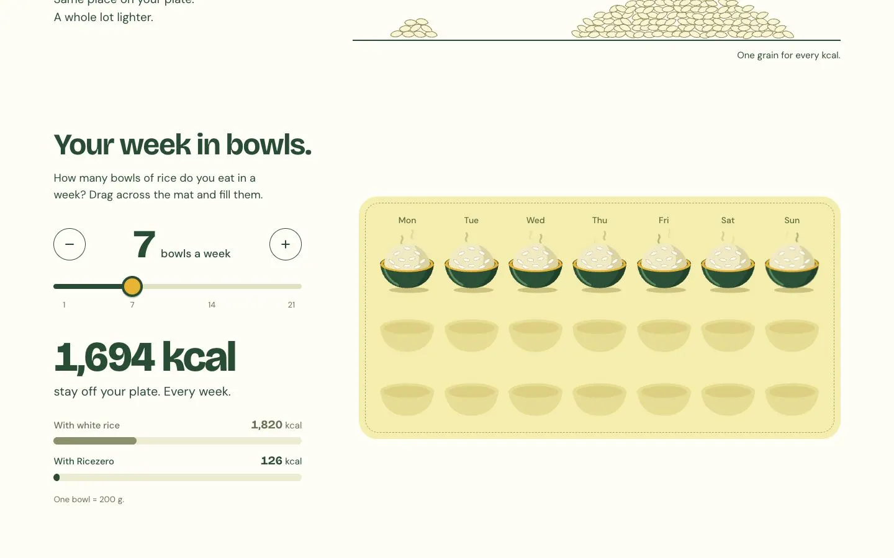
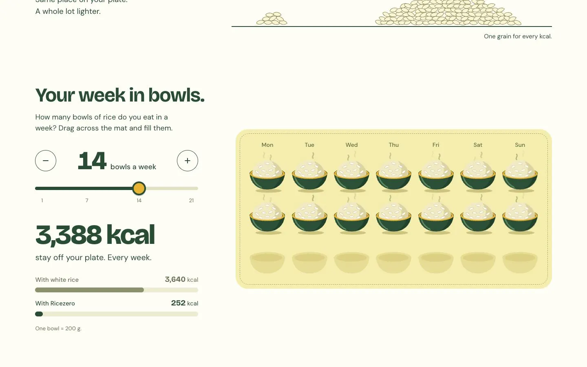
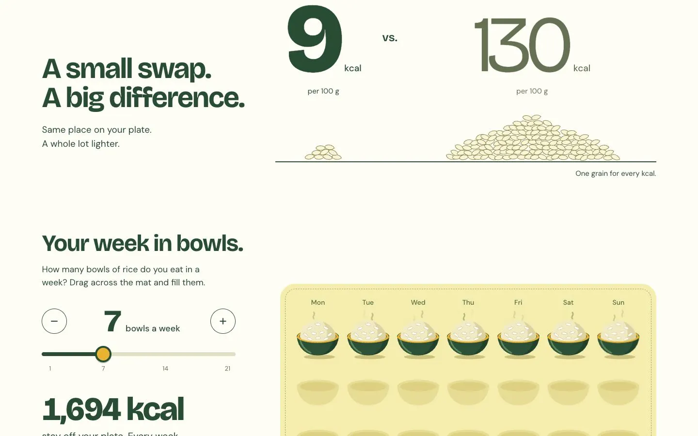

Ricezero
Rice rituals, made lighter.
D2C site for shirataki rice that has 9 kcal per 100 g. It is for people who want to keep eating rajma chawal and biryani while cutting the calories.
Visit ricezero.com
Design decisions
- Hero in pale butter yellow with deep green (#294C35) type; the headline is set in Bricolage Grotesque at about 99px with tight tracking, body copy in DM Sans.
- Large illustrated bowl of rice and rajma with steam, a lemon and onion side dish and loose grains, so the food is the hero image.
- A comparison section draws one grain of rice for every kcal, with a small pile for Ricezero beside a big pile for ordinary rice.
- 'Your week in bowls' calculator: a slider and plus/minus buttons set bowls per week, a mat of illustrated bowls fills up, and it shows kcal saved against white rice (3,388 kcal at 14 bowls).
- One primary dark green button, 'Find your pack', with a small outlined 'Shop Ricezero' in the nav; the tone of the copy is playful ('Curry approved').
On a phone

Ricezero has a single theme, so there is one set of captures.
The flow, step by step



Further down the page
